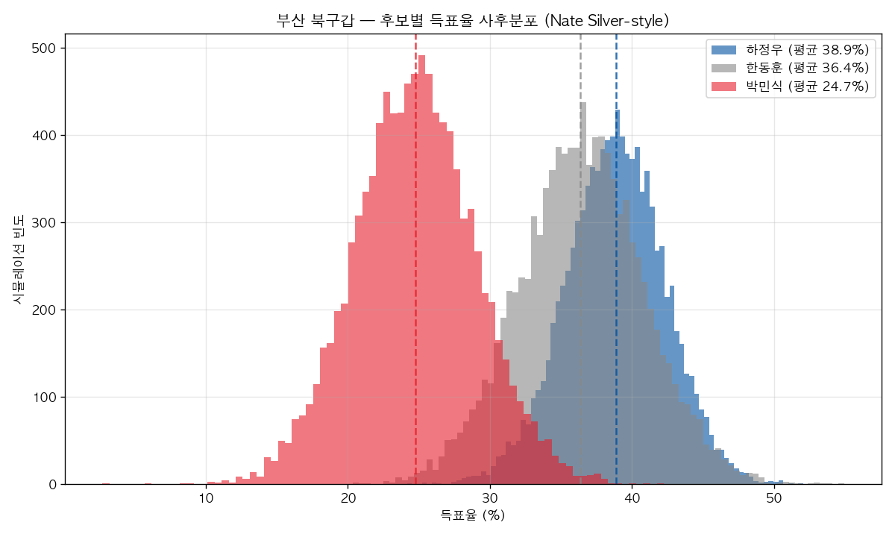
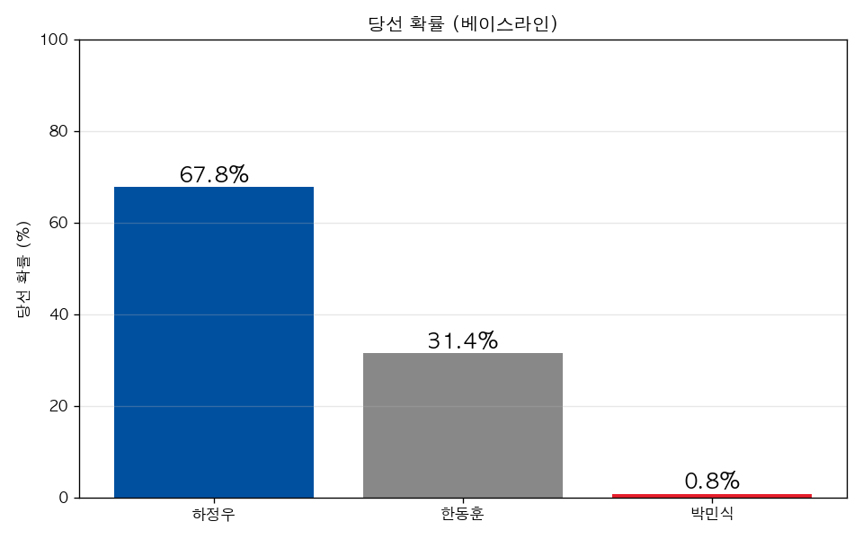
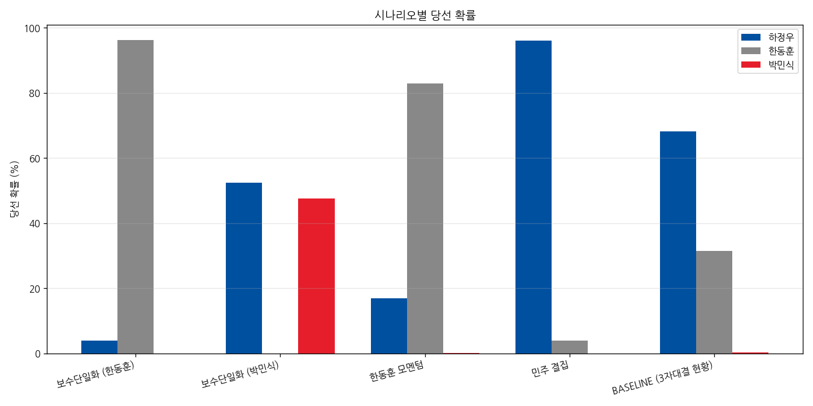
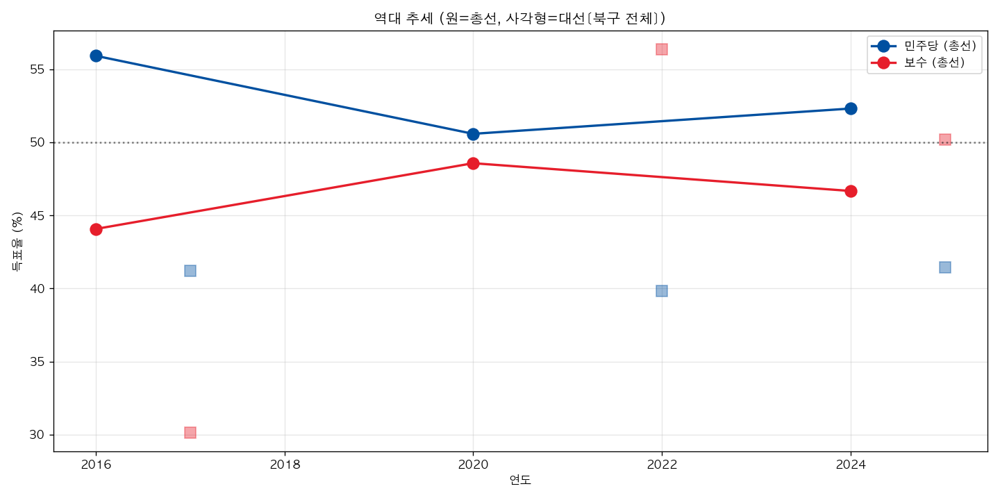

후보별 당선 확률
컴퓨터로 1만 번의 가상 선거를 돌려 본 결과 — 그 중 몇 번 당선되었는지의 비율
💡 이 사이트는 뭘 보여주나요?
과거 부산 북구갑 선거 결과 + 최근 여론조사 12건 + 부산 특유의 "샤이 보수" 효과를 합쳐, 컴퓨터가 "오늘 시점에서 누가 당선될 확률이 얼마인지"를 매일 새로 계산해 보여줍니다. 어려운 용어나 자세한 계산이 궁금하면 위쪽의 📚 방법론·배경 탭을 눌러주세요.
샤이 보수 (Shy Conservative) 추정
여론조사에는 "보수 뽑겠다"고 답하기 꺼리는 사람이 있어, 실제 득표가 조사보다 보수 쪽으로 더 나오는 경향이에요. 이 모델은 부산 과거 선거들을 보고 그 차이를 보정해 줍니다.
📊 산출 근거 (부산 지역 폴 vs 실제득표 격차)
- 2022 대선 부산 폴 평균 보수 ~53% → 실제 윤석열 58.3% +5.3%p
- 2024 총선 부산 평균 폴 보수 ~44% → 실제 47% +3.0%p
- 2021 부산시장 보궐 폴 박형준 53–58% → 실제 62.7% +5~10%p
⚡ 모델 영향 (보정 전 → 후)
| 후보 | 샤이 미적용 | 샤이 적용 | Δ |
|---|
📈 여론조사 지지율 추세 · 골든크로스 워치
5월 1일 이후 모든 3자대결 여론조사를 fieldwork 중간일 기준으로 √n × 시간감쇠(반감기 7일) 가중 일별 이동평균. 한동훈(무소속)이 하정우(민주)를 추월하면 골든크로스예요.
예상 득표율 분포
각 후보가 받을 득표율의 "가능한 범위". 가운데 점은 가장 가능성 높은 값, 가는 막대는 90% 확률로 그 사이에 들어오는 범위예요.
예측 변화 추이
매일 새로 계산한 당선 확률을 시간순으로 본 그래프 — 시간이 지나면 추세선이 채워집니다
시나리오별 당선 확률
"만약 ~ 한다면" 식의 가상 상황에서 당선 확률이 어떻게 바뀌는지 비교
- 보수단일화는 후보가 누구냐가 핵심 — 한동훈 단일화: 압승 · 박민식 단일화: 패배
- 한동훈 +15% 모멘텀이 있으면 충분히 역전 가능, 16일 변동성 큼
- 박민식 사퇴 → 한동훈으로 보수 결집이 하정우의 최대 위협
여론조사 12건 (3자대결, 매체별 lean 표시)
매체마다 정치 성향이 달라서 결과가 조금씩 치우칠 수 있어요. 색깔로 매체 성향을 표시했고, 최근에 조사된 것부터 보여줍니다. ⭐ = 한동훈 1위 또는 오차범위 내 박빙
먼저, 어려운 용어부터 풀어볼게요
이 사이트에 나오는 통계 용어들을 일상 언어로 풀어 쓴 미니 사전
예측은 이렇게 만들어져요 (6단계)
매일 자동으로 돌아가는 계산 파이프라인 — Nate Silver 538 방식 + 부산 지역 보정
"이 동네는 원래 어떤 성향?"
북구갑 최근 3번 총선(2016/2020/2024)을 평균. 최근일수록 가중치 ↑. 보궐선거는 진보 쪽 투표율이 살짝 낮은 경향이라 -2%p 보정. 보수 표는 한동훈 65 : 박민식 35로 나눕니다.
"이 매체는 좀 치우치지 않나?"
여론조사 기관마다 결과가 살짝 한쪽으로 치우치는 경향(house effects)이 있어요. 우파 매체는 보수 후보를 평균보다 1.5%p 더 잡고, 좌파 매체는 진보 후보를 1.5%p 더 잡는 식. 그 알려진 양만큼 빼서 평준화합니다.
"최근 폴들을 합치자"
최근 21일 폴을 모두 가중평균. 최근 조사일수록(반감기 7일) + 응답자가 많은 조사일수록(√n) 비중을 더 줍니다. 아직 마음 못 정한 부동층은 하/한/박 = 30:40:30으로 배분.
"전화에 안 잡히는 표 +4%p"
부산은 과거에 여론조사보다 실제 보수 득표가 평균 +4%p 정도 더 나왔어요 (2022 대선 +5.3, 2024 총선 +3, 2021 시장보궐 +5~10%p). 그 평균을 한동훈/박민식 50:50으로 나눠 더해 줍니다.
"종합 예측 만들기"
1~4단계를 통계적으로 합쳐 새 예측을 만듭니다. 단, "여론조사가 진짜 그만큼 정확하진 않다"는 점을 반영해 표본을 1/7로 할인(design effect = 7). 비표본오차·매체 편향까지 고려한 안전장치예요.
"확률로 환산"
5단계 예측에서 1만 번 결과를 뽑아 봅니다. 각 시뮬레이션엔 "선거일까지 분위기가 흔들릴 수 있는 정도" (±4.5%p, 한·박은 반대 방향 상관)도 더해요. 그 중 A 후보가 5,500번 이기면 "A 당선 확률 55%".
핵심 가정과 위험도
아래 가정 중 하나라도 크게 틀리면 결과가 달라집니다
선거 배경
왜 보궐선거인가
21대 의원 전재수(민주)가 2026년 부산광역시장 출마를 위해 2026-04-30 의원직 사퇴. 그 빈자리를 채우는 보궐선거가 같은 날(6월 3일) 진행되는 부산시장 선거와 동시에 치러집니다.
3자 구도
하정우(더불어민주당) vs 박민식(국민의힘) vs 한동훈(무소속). 한동훈의 무소속 출마로 인한 보수 분열이 이번 선거의 결정적 변수.
북구갑은 어떤 지역구
보수 우세 부산에서 민주당이 3연승(2016/2020/2024)한 거의 유일한 지역구. 단, 대선/지방선거에서는 보수가 더 잘 나옴 → 선거 종류별 갭이 큰 변동성 있는 곳.
상세 시각화 (정적 이미지)
매일 자동 생성되는 PNG 차트 — 위쪽 인터랙티브 차트와 같은 데이터 기반




출처 모음 (Sources)
본 페이지에서 인용한 모든 자료의 원문 링크
📊 여론조사 12건 (날짜순)
- 뉴스토마토 · 미디어토마토 (4/24–25, n=802) 좌파 하 35.5 · 한 28.5 · 박 26.0
- 부산MBC · 한길리서치 1차 (5/1–3, n=584) 중도좌 ★ 양자 한 38.2 ▶ 하 37.4
- SBS · 입소스 (5/1–3, n=503) 중도 하 38 · 박 26 · 한 21
- JTBC · 메타보이스 (5/4–5, n=501) 중도좌 하 37 · 박 26 · 한 25
- KBS부산 · 한국리서치 (5/8–10, n=500) 중도좌 하 37 · 한 30 · 박 17
- 국제신문 · 리얼미터 (5/9–10, n=506) 중도 하 43.4 · 한 28.1 · 박 23.1
- 부산MBC · 한길리서치 2차 (5/11–12, n=501) 중도좌 하 35.5 · 한 32.6 · 박 25.5
- 뉴스1 · 한국갤럽 (5/12–13, n=508) 중도 하 39 · 한 29 · 박 21
- 여론조사꽃 (5/14–15, n=502) 좌파 하 41.7 · 한 32.2 · 박 21.1
- 조선일보 · 메트릭스 (5/16–17, n=501) 우파 하 39 · 한 33 · 박 20
- MBC · 코리아리서치 (5/16–18, n=500) 중도좌 하 38 · 한 33 · 박 20
- 뉴시스 · 에이스리서치 (5/17–18, n=504) 중도 하 40.4 · 한 32.7 · 박 20.9
- 채널A · 리서치앤리서치 (5/17–19, n=500) 우파 ★ 한 34.6 ▶ 하 32.9 · 박 20.5 (한동훈 유일 1위)
📺 방송 · 영상
📰 보도 · 분석
🏛️ 1차 자료 (선거 · 인구 통계)
📚 위키 (2차 자료, 데이터 수집 사용)
- 위키백과 — 부산광역시 22대 / 21대 / 20대 총선
- 위키백과 — 19대 / 20대 / 21대 대선 (부산광역시)
- 위키백과 — 제7회·제8회 전국동시지방선거 (부산광역시)
- 위키백과 — 부산 북구의 국회의원